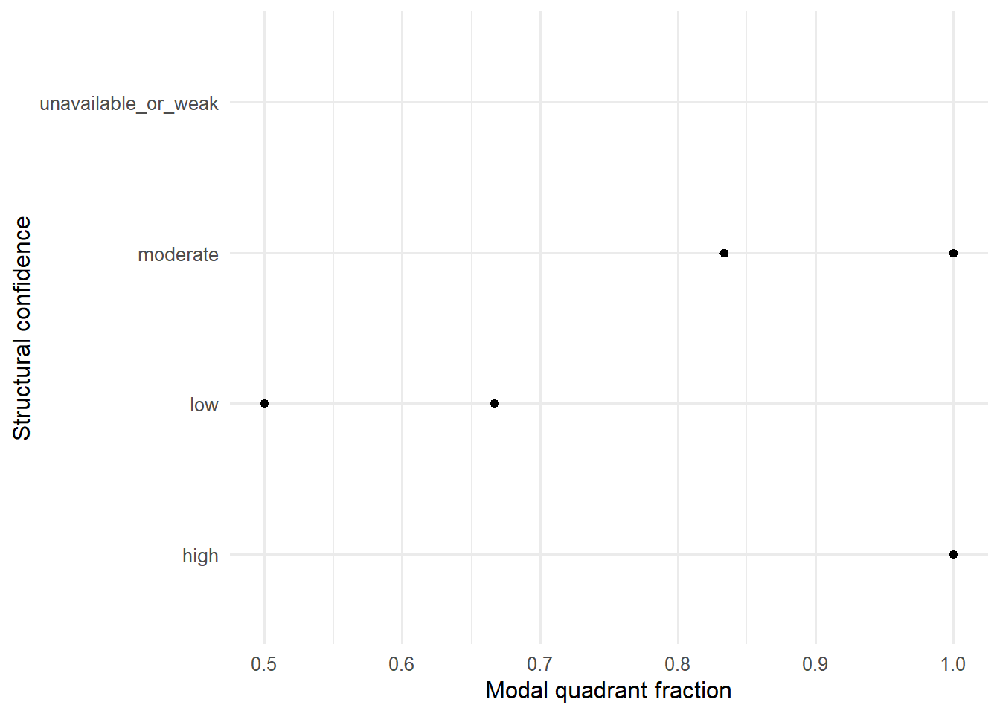

| Comparison | Modal Quadrant | Modal Fraction | Unique Quadrants | High-Confidence Fraction | Stability Class |
|---|---|---|---|---|---|
| BLAD/TCC | I | 1.000 | 1 | 0.667 | Cross-Chip/Cross-Filter Stable |
| BR/BRAD | I | 1.000 | 1 | 1.000 | Cross-Chip/Cross-Filter Stable |
| Brain/GBM | I | 1.000 | 1 | 0.000 | Cross-Chip/Cross-Filter Stable |
| GC/FL | I | 1.000 | 1 | 0.667 | Stable Among Available Assignments |
| GC/LBCL | I | 1.000 | 1 | 0.000 | Stable Among Available Assignments |
| LU/LUAD | I | 1.000 | 1 | 1.000 | Cross-Chip/Cross-Filter Stable |
| PB/T-ALL | II | 1.000 | 1 | 0.000 | Cross-Chip/Cross-Filter Stable |
| PR/PRAD | I | 1.000 | 1 | 0.000 | Cross-Chip/Cross-Filter Stable |
| Brain/MB | I | 0.833 | 2 | 0.000 | Majority-Stable |
| COL/COADREAD | I | 0.833 | 2 | 0.000 | Majority-Stable |
| KID/RCC | IV | 0.833 | 2 | 0.000 | Majority-Stable |
| PB/B-ALL | II | 0.833 | 2 | 0.000 | Majority-Stable |
| UT/EAC | I | 0.833 | 2 | 0.000 | Majority-Stable |
| PA/PAAD | IV | 0.667 | 2 | 0.333 | Unstable |
Purpose
The stability atlas evaluates whether structural interpretations persist across chips, filter regimes, and boundary perturbations. A structural phenotype is most compelling when its quadrant, archetype, and descriptor direction remain stable under analytic perturbation.
The Descriptor Landscape Atlas identified recurring signed shifts across multiple descriptor families. The present atlas asks whether those structural patterns are reliable under analytic variation. Convergence is more compelling when quadrant assignments, confidence calls, and boundary behavior remain stable across chips and feature-selection regimes.
Quadrant Stability
Boundary Robustness
| Comparison | Modal Quadrant | Modal Fraction | Boundary Margin | Boundary Crossings | Robustness Class | Structural Confidence |
|---|---|---|---|---|---|---|
| OV/OVAD | NA | NA | NA | 0 | Unavailable Structural Signal | Unavailable Or Weak |
| BLAD/TCC | QII | 0.833 | 0.189 | 1 | Stable Boundary Archetype | Moderate |
| Brain/GBM | QIII | 1.000 | 0.320 | 0 | Stable Boundary Archetype | Moderate |
| Brain/MB | QIII | 1.000 | 0.234 | 0 | Stable Boundary Archetype | Moderate |
| COL/COADREAD | QIII | 1.000 | 0.711 | 0 | Stable Boundary Archetype | Moderate |
| GC/FL | QI | 1.000 | 0.123 | 0 | Stable Boundary Archetype | Moderate |
| GC/LBCL | QI | 1.000 | 0.297 | 0 | Stable Boundary Archetype | Moderate |
| LU/LUAD | QI | 1.000 | 0.318 | 0 | Stable Boundary Archetype | Moderate |
| PA/PAAD | QIII | 1.000 | 0.599 | 0 | Stable Boundary Archetype | Moderate |
| PB/T-ALL | QI | 1.000 | 0.718 | 0 | Stable Boundary Archetype | Moderate |
| UT/EAC | QI | 1.000 | 0.575 | 0 | Stable Boundary Archetype | Moderate |
| BR/BRAD | QI | 0.667 | 0.532 | 1 | Single Axis Flipper | Low |
| PR/PRAD | QIII | 0.500 | 0.414 | 0 | Single Axis Flipper | Low |
| KID/RCC | QIII | 1.000 | 1.025 | 0 | Stable Core Archetype | High |
| PB/B-ALL | QI | 1.000 | 0.980 | 0 | Stable Core Archetype | High |
Stability Plot

Interpretation and Limitations
Stability should be interpreted as inferential reliability rather than biological magnitude. A large structural shift is less persuasive if its direction changes under feature selection or if the comparison repeatedly crosses quadrant boundaries. Conversely, a moderate but stable structural shift may represent a more reliable structural phenotype.
This atlas therefore separates structural magnitude from structural reliability. Stable assignments support stronger cross-cancer interpretation, whereas unstable or boundary-sensitive assignments should be treated as provisional.
A stable structural assignment does not imply shared molecular mechanism, shared tissue origin, or shared pathway activation. It indicates that the structural state classification is robust within the analytic framework.
Key Observation
The Stability Atlas shows that many cancer comparisons retain coherent structural assignments across analytic perturbations, although confidence varies across comparisons.
This finding strengthens the convergence pattern observed in the Archetype, Quadrant, and Descriptor Landscape atlases by showing that recurring structural states are not merely single-run artifacts.
The next atlas examines whether cancers with similar structural behavior also exhibit measurable similarity relationships across the broader synthesis landscape.